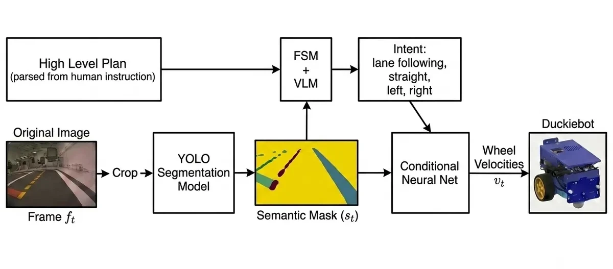
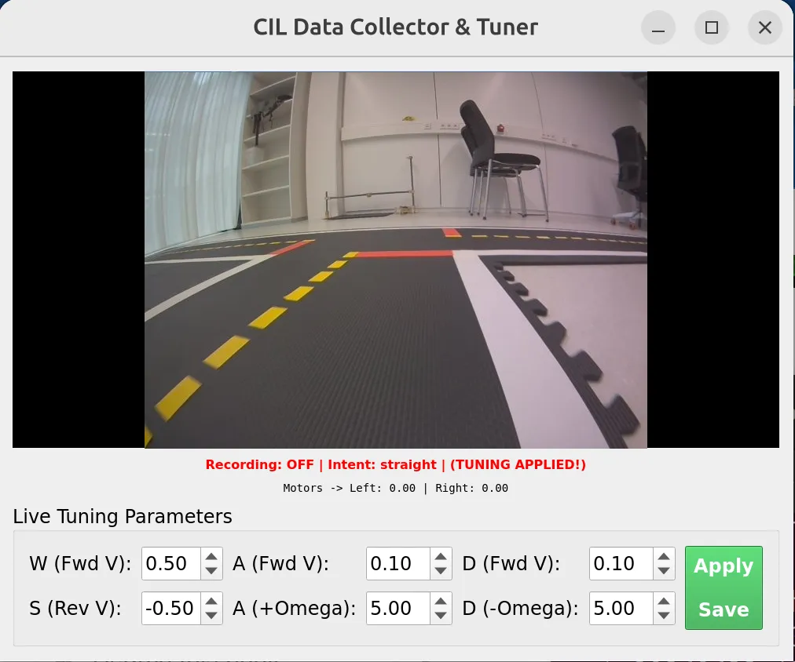
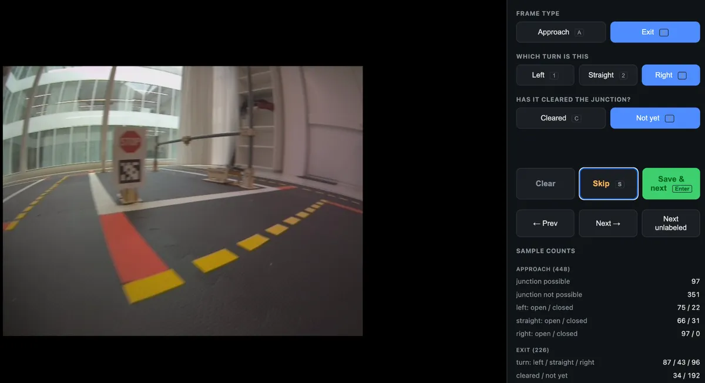
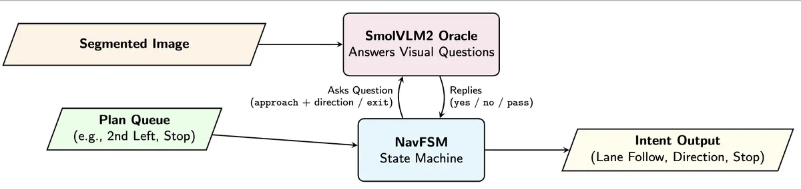
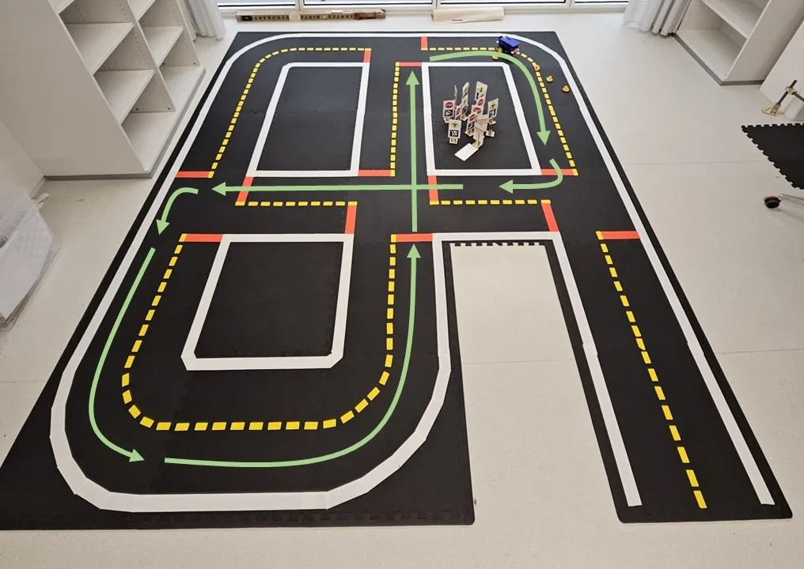

Autonomous Pipeline: Given a text instruction as a high level plan, we parse a queue of maneuvers. Based on the queue, at each frame we prompt our VLM and get back an intent. Based on the predicted intent and the segmentation mask of our current frame, the Conditional Imitation Learning controller predicts wheel velocities.
While implementing Duckietown Learning Experiences, we experienced the limitations of classical modular pipelines firsthand. We overcome these limitations by training conditional imitation learning (CIL) models on segmented images that drive the Duckiebot according to a per-frame intent. This intent is produced by a fine-tuned Vision-Language Model (VLM) guided planner following a high-level plan. With this setup, the bot robustly performs lane-following and turning at intersections, enabling a safe driving experience in Duckietown. The code can be found here.
To overcome hardware drift and lighting issues, we control our Duckiebot using neural networks. We solve ambiguous situations like intersections by conditioning our model on high-level commands or intents. The scene is first summarized into a semantic mask, and a policy network subsequently predicts wheel velocities.

Figure 1: Inference Pipeline. The input camera frame is semantically segmented by YOLO, while a VLM oracle observes the frame to guide a Finite-State Machine (FSM). The resulting intent and semantic mask condition a neural network to produce wheel velocities.
To collect the imitation learning dataset, we built a custom data collection node with a teleoperation UI. We additionally developed a web annotation tool to label the VLM fine-tuning dataset to train the visual oracle.

Figure 2: Data Collection UI. The teleoperation UI used to gather expert driving trajectories.

Figure 3: Data Annotation UI. Used to label approach and exit states for VLM fine-tuning.

Figure 4: Planner Architecture. The VLM processes the raw frame and guides the planner through a queue of maneuvers to output the current intent.
A text instruction (e.g. "take the second left") is parsed into a queue of maneuvers. An FSM queries a fine-tuned SmolVLM2 model once per frame to ask whether a junction is ahead and whether the junction has been cleared, acting as a visual oracle to drive state transitions.
We implemented two distinct conditioning architectures to fuse the visual features with the high-level intent: a Multiple Head (MH) architecture that routes features to intent-specific layers, and a Feature-wise Linear Modulation (FiLM) architecture that dynamically modulates convolutional features based on the intent embedding.
We tested the models on isolated intent tasks and long-term stability runs. For isolated tasks, the model runs 5 times in each direction. Model variant a) denotes the baseline sampling strategy, while b) denotes an adjusted intent-balancing sampling strategy.
| Task | Multiple Heads | FiLM | ||
|---|---|---|---|---|
| a) | b) | a) | b) | |
| Semicircle (left/right) | 5/4 | 4/5 | 5/5 | 5/5 |
| Long corner (left/right) | 5/5 | 5/4 | 5/5 | 5/5 |
| Straight at intersection | 5/5 | 5/5 | 5/5 | 5/5 |
| Left turn at intersection | 4/2 | 5/5 | 5/5 | 5/5 |
| Right turn at intersection | 5/5 | 5/5 | 5/5 | 5/5 |
| Long run (Continuous) | 5 | 5 | 4 | 5 |

Figure 5: Long Run Task. The Duckiebot is tasked with continuously driving along a predefined loop to test long-term stability.
To evaluate the VLM oracle, we compared zero-shot and few-shot prompting against a fine-tuned classification head on SmolVLM2, as well as a CNN baseline.
| Metric | Zero-shot Photo | Few-shot Photo | SmolVLM2 Mask | SmolVLM2 Photo | CNN Mask |
|---|---|---|---|---|---|
| Junction | 0.681 | 0.719 | 1.000 | 0.970 | 0.836 |
| Left Open | 0.720 | 0.417 | 0.923 | 1.000 | 0.720 |
| Straight Open | 0.222 | 0.000 | 1.000 | 1.000 | 0.933 |
| Right Open | 0.250 | 0.000 | 1.000 | 1.000 | 0.609 |
| Exit Cleared | 0.000 | 0.000 | 0.945 | 0.963 | 0.612 |
| Macro F1 | 0.375 | 0.227 | 0.974 | 0.987 | 0.742 |
Fine-tuning SmolVLM2 resolves the temporal failures seen in zero-shot prompting. We deployed the SmolVLM2 Mask head for live inference because the segmentation mask restricts out-of-distribution errors from unseen objects.